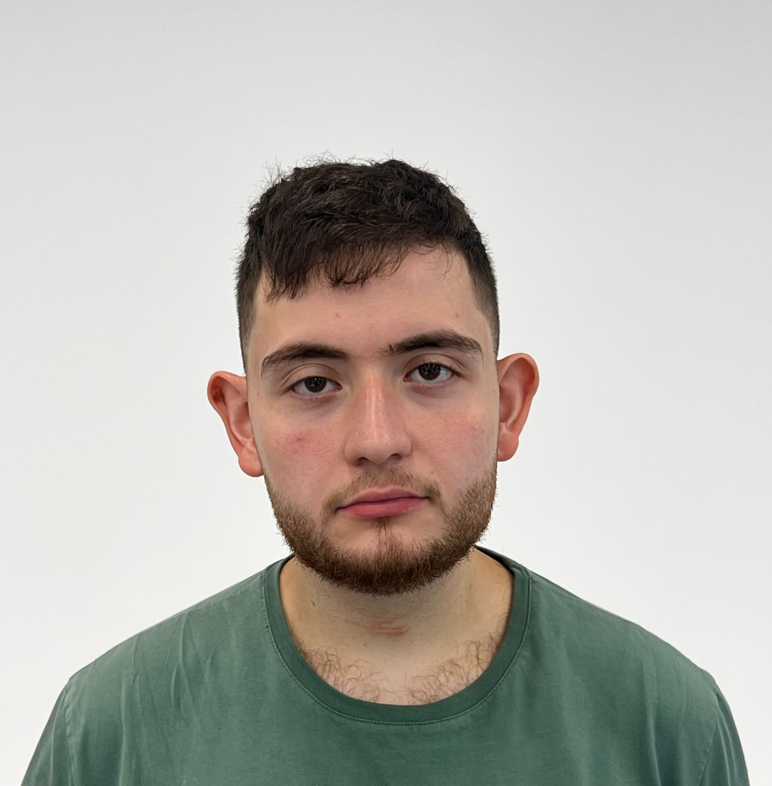
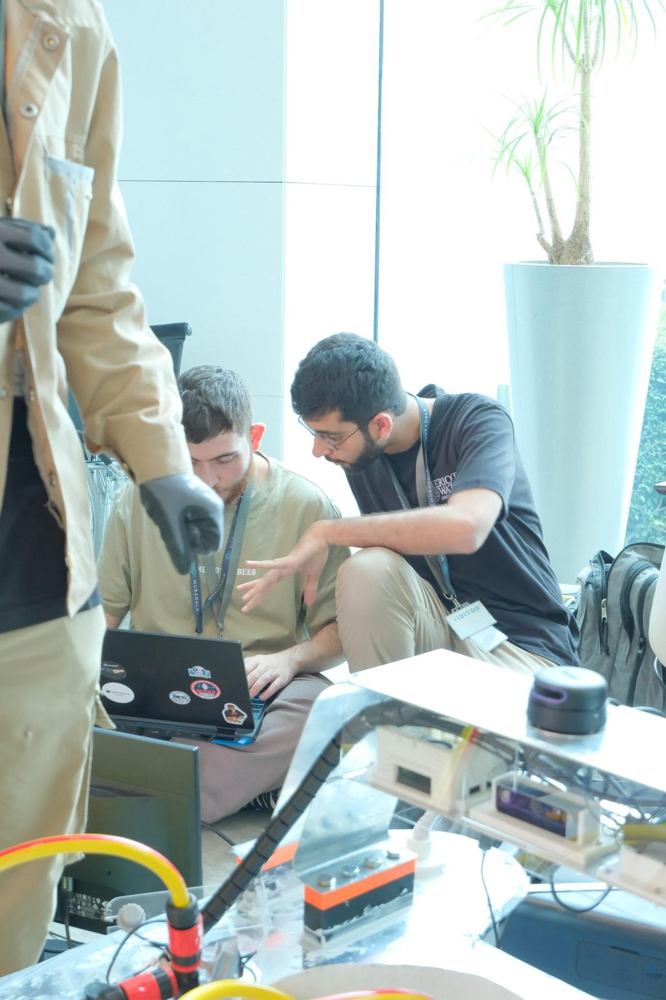

Robotics Engineer & Researcher

Introduction I am a robotics engineer and researcher with a background spanning embedded systems, computer vision, autonomous navigation, and machine learning. My core interest is in how robots learn and adapt over their operational lifetime, drawing from neuroscience principles like Hebbian learning and ontogenetic adaptation to build systems that react, reorganise, and improve without retraining. My research sits at the intersection of autonomous systems, reactive navigation, neuromorphic sensing, and artificial life, with a focus on building robots that behave intelligently in unstructured environments.

Expertise